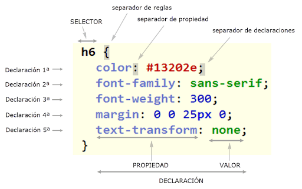
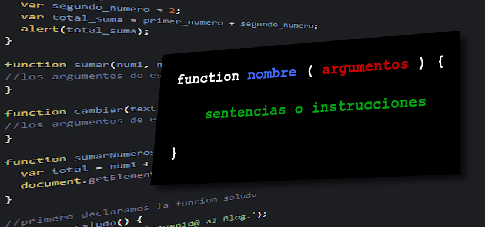

Benvinguts a la web de Yago
Aquesta és la web d'optativa de robòtica de tercer d'ESO feta a l'institut Pompeu Fabra de Martorell.
El primer projecte és per al Día mundial de la poesía de la UNESCO que serà el 21 de març de 2026.
El professorat ens ha donat un exemple. Necessitarem aprendre tres llenguatges:
HTML
:Llenguatge de Marques de HiperText, utilitza marques com per exemple <p>per crear paragrafs, <ul>per crear llistes desordenades, <ol>per crear llistes ordenades,Per posar imatges escrivim <mg src=" ">.També permet fer taules,posar vídeos i audios.- CSS:Fulls d'estils en cascada dona: dona forma al html anterior, permet triar tipus de lletra, el color de lletra, el color del fons, els marges i tot l'estil de la pàgina. Sempre s'escriu aquesta estrucura marca{propietat1:valor1;propietat2:valor2} 
- Javascript permet el codi interactiu i tot el comportament de la pàgina 